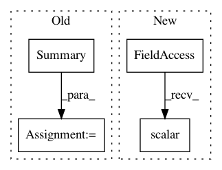

2b77a13f3870712284122f2a5411c7d4b8db82e6,yarll/agents/sac.py,SAC,learn,#SAC#,253
Before Change
self.train(model_summary=True)
state = new_state
if done:
summary = tf.Summary()
summary.value.add(tag="global/Episode_length",
simple_value=float(episode_length))
summary.value.add(tag="global/Reward",
simple_value=float(episode_reward))
After Change
state = new_state
if done:
self.total_episodes += 1
tf.summary.scalar("env/Episode_length", episode_length, self.total_steps)
tf.summary.scalar("env/Reward", episode_reward, self.total_steps)
tf.summary.scalar("env/N_episodes", self.total_episodes, step=self.total_steps)
break
In pattern: SUPERPATTERN
Frequency: 3
Non-data size: 4
Instances
Project Name: arnomoonens/yarll
Commit Name: 2b77a13f3870712284122f2a5411c7d4b8db82e6
Time: 2019-06-09
Author: arno.moonens@gmail.com
File Name: yarll/agents/sac.py
Class Name: SAC
Method Name: learn
Project Name: arnomoonens/yarll
Commit Name: 34758fa83c25c4b79425bbfa6e56e23618253f37
Time: 2019-03-15
Author: arno.moonens@gmail.com
File Name: yarll/agents/env_runner.py
Class Name: EnvRunner
Method Name: get_steps
Project Name: uber/ludwig
Commit Name: ec57dc8af72beab68a470b2f7704431b5d9957f9
Time: 2020-02-14
Author: jimthompson5802@aol.com
File Name: ludwig/models/model.py
Class Name: Model
Method Name: add_tensorboard_epoch_summary